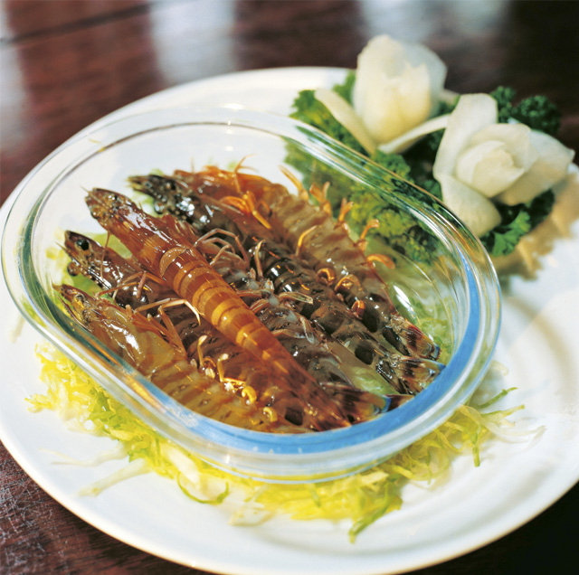
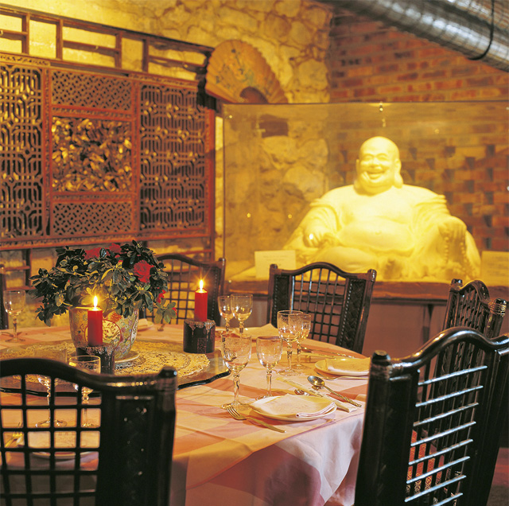

Kuan Yin, die chinesische Göttin der Barmherzigheit, höchstpersönlich wacht über das Wohl der Gäste im Restaurant Chez Vong, das sich mitten im belebten Viertel Les Halles befindet. Die goldene Statue mit den vielen Armen verleiht dem chinesischen Gourmet-Restaurant ein ganz besonderes Flair. 1980 von Herrn Vong gegründet, gehört es zu den besten seiner Art in Paris. Zahlreiche Prominenz aus Kunst, Haute Couture, Wirtschaft und Politik genießt seitdem die aromatischen und saisonalen Darbietungen aus der Küche des Hausherrn. Geboren in Macao, ist Vai Kuan Vong seinen chinesischen Wurzeln treu geblieben. Seines Amtes waltend, bietet er eine authentische kantonesische Küche und andere regionale chinesische Spazialitäten, darunter eine der Hauptspeisen, die lackierte Peking-Ente, die traditionell in drei Gängen serviert wird (knusprige Haut, Fleisch, Bouillon). Sehr zu empfehlen ist auch die Bresse-Poularde à la Vong, die ebenfalls in drei Teilen auf den Teller kommt und zu den typischen Winterkreationen des Hauses gehört. Gemäß den Jahreszeiten können die in der Schale servierten gedämpften Jakobsmuscheln probiert werden, „betrunkene Garnelen“ begleiten die exzellenten französischen Weine. Beachtenswert ist nicht nur die Koch-, sondern auch die Schnitzkunst des Chefs. Bewundernswert ist sein Meisterwerk: ein „Glücklicher Buddha“, den er aus 100 Kilogramm gefrorener Butter geformt hat.


{kind=link}
{kind=link}